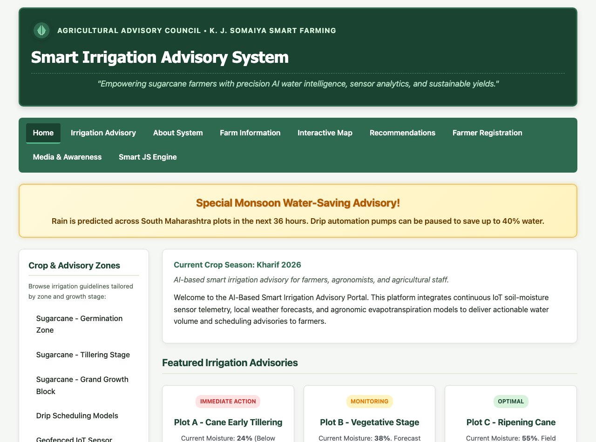
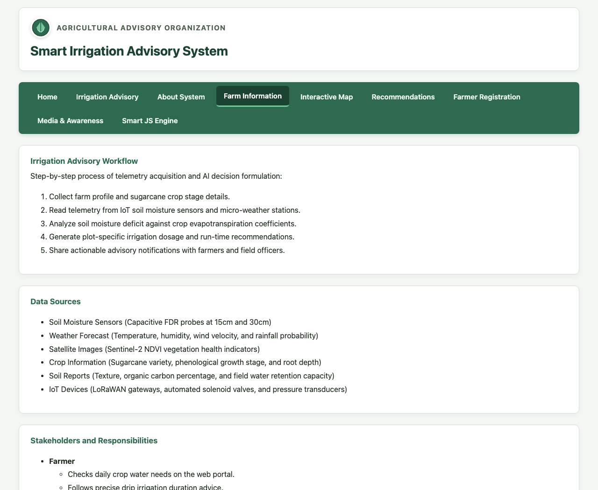
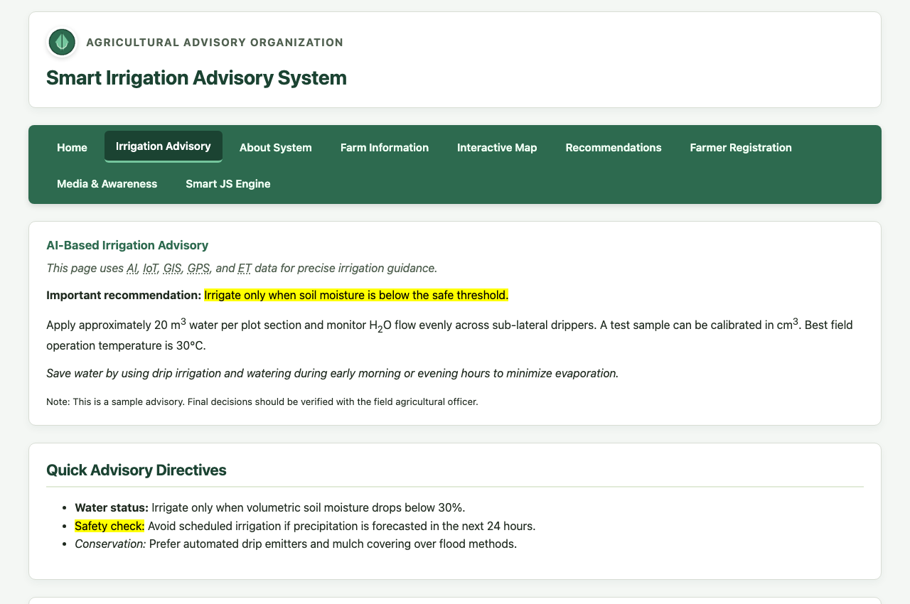
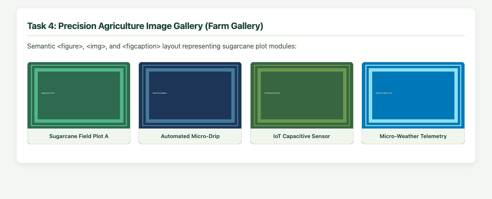
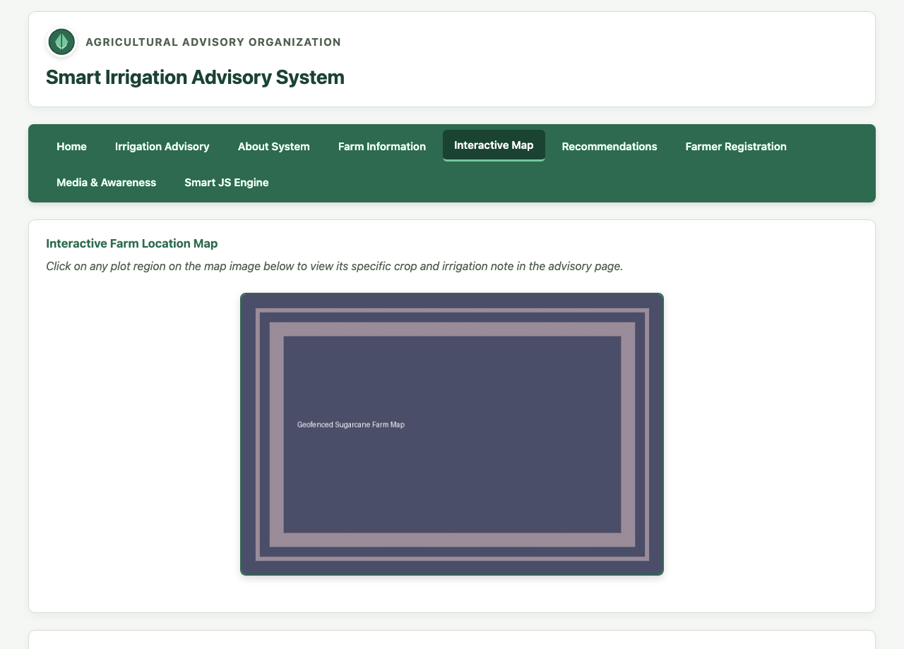
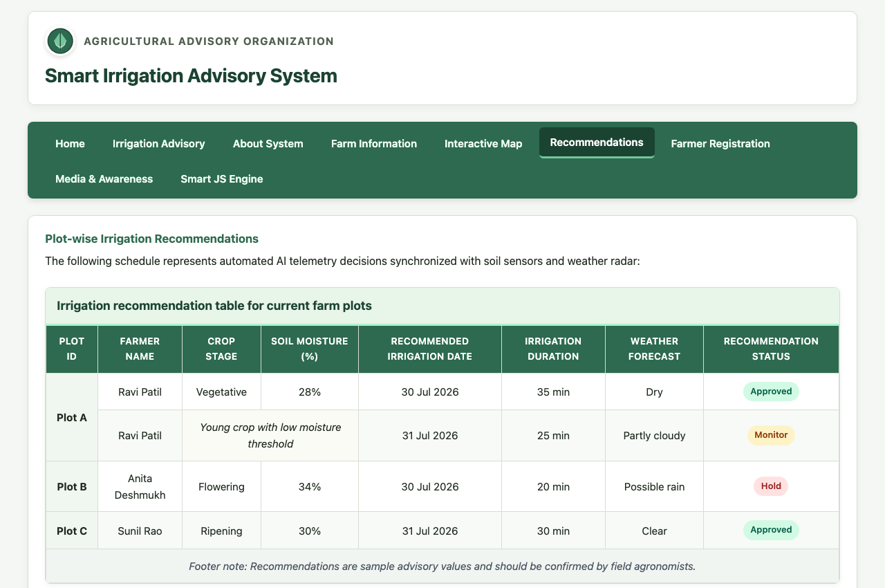
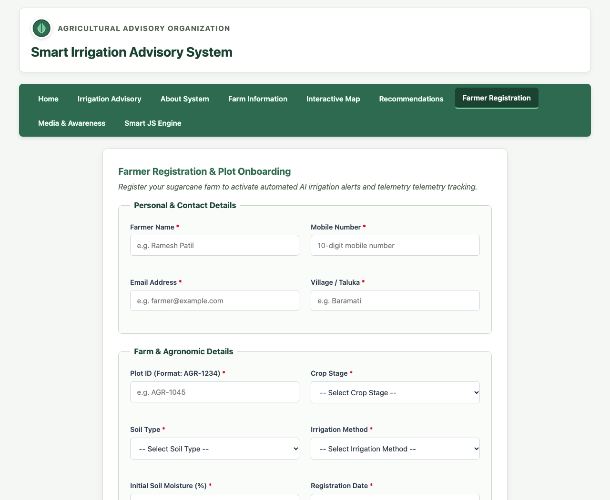
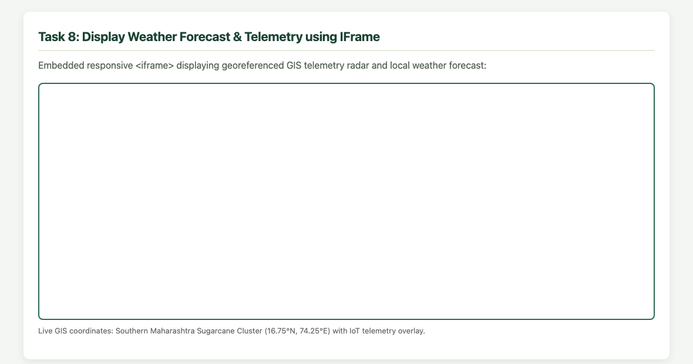
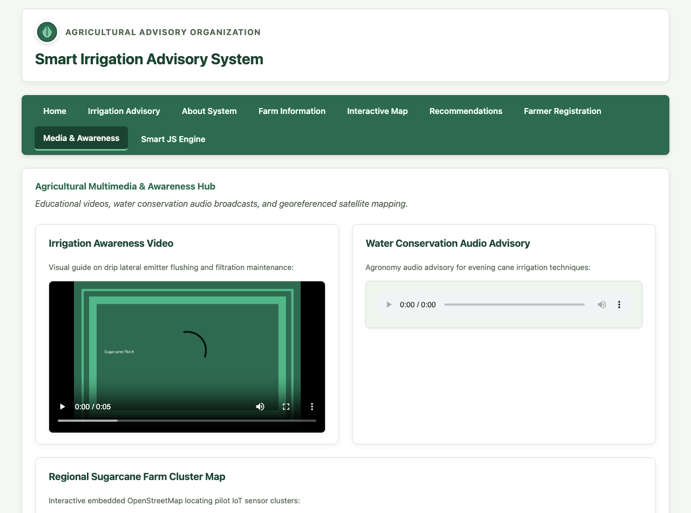

Design and Development of an AI-based Smart Irrigation Advisory Web Portal Front-End using HTML5
Aim of the Experiment:
To design and develop a multi-page, use-case-based web portal front-end using HTML5 for an AI-based Smart Irrigation Advisory System for sugarcane crops (KJS-AGR-01), incorporating semantic structure, lists, text formatting, multimedia, interactive client-side image maps, responsive tables, and forms.
Objectives of the Experiment:
1. To develop structured and semantic HTML5 web pages for an AI-enabled smart irrigation advisory system.
2. To create interactive web pages for farmer registration, irrigation recommendations, and weather forecast display.
3. To apply real-world agricultural IoT use case telemetry as the core theme across all modular pages.
4. To implement HTML5 lists, tables, image maps, forms, and multimedia elements without external libraries.
5. To build a robust, accessible foundation ready for subsequent CSS3 styling and JavaScript validation layers.
COs to be achieved:
CO1: Developing webpages using HTML and CSS.
Books / Journals / Websites references:
1. MDN Web Docs – HTML: HyperText Markup Language, Mozilla Developer Network, 2026.
2. W3Schools – HTML5 Tutorial and Semantic Web Guide, Refsnes Data, 2026.
3. J. Duckett, HTML and CSS: Design and Build Websites, 1st ed., Indianapolis, IN: John Wiley & Sons, 2011.
Theory / Relevant Concepts:
HyperText Markup Language 5 (HTML5) is the core standard for structuring and presenting content on the World Wide Web. HTML5 introduces semantic tags that provide explicit meaning to both browsers and search engines, superseding legacy generic 'div' elements.
Key HTML5 Modules Used in This Portal:
• Semantic Structural Elements: <header>, <nav>, <main>, <section>, <article>, <aside>, and <footer> delineate the layout hierarchy.
• Lists: Ordered lists (<ol>), unordered lists (<ul>), and definition lists (<dl>) organize sensor workflows and agricultural abbreviations.
• Tables: <table>, <thead>, <tbody>, <tfoot>, with rowspan and colspan attributes present multi-zone moisture thresholds.
• Client-Side Image Maps: <map> and <area> tags enable coordinate-based navigation on farm plots.
• Forms: Input controls enclosed within <fieldset> and <legend> enable structured farmer data acquisition.
• Multimedia & Iframes: Native <video>, <audio>, and <iframe> deliver awareness media and GIS radar telemetry.
Expected Output / Screenshots (Task-Wise):
Task 1: Semantic Homepage Portal Structure (index.html)

Task 2: Farm Information Displayed using Ordered, Unordered & Definition Lists (farm-information.html)

Task 3: Irrigation Advisory Page using HTML Formatting & Abbreviation Tags (irrigation-advisory.html)

Task 4: Farm Gallery using Semantic Figure, Image & Figcaption Elements

Task 5: Interactive Farm Plot Navigation using Client-Side Image Map (<map> & <area>) (farm-map.html)

Task 6: Soil Moisture & Irrigation Quota Table (Thead, Tbody, Rowspan & Colspan) (recommendation.html)

Task 7: Farmer Registration Form with Semantic Controls & Fieldsets (registration.html)

Task 8: Display Weather Forecast & Georeferenced Radar using IFrame (media.html)

Task 9: Multimedia & Executable Awareness Content (Native HTML5 Audio & Video) (media.html)

Post Lab Subjective/Objective type Questions:
1. Explain the importance of semantic elements in HTML5 compared to traditional div tags.
Semantic elements (<header>, <nav>, <article>, <section>, <footer>) clearly communicate their role to browsers, search engines, and screen readers. Generic <div> tags convey no contextual meaning, making accessibility parsing and SEO ranking significantly harder.
2. How does a client-side image map function?
An <img> references a <map> via usemap="#name". Inside the map, <area> elements define geometric zones (rect, circle, poly) with coordinate bounds (coords="...") and target hyperlinks. Clicks within these bounds route directly to the specified destination.
Conclusion and Discussion:
Experiment 1 established the clean structural and semantic foundation of the AI-based Smart Irrigation Advisory Portal using pure HTML5. Multi-page navigation, domain lists, coordinate-based image mapping, tables with span attributes, structured input forms, and multimedia content were all successfully verified.